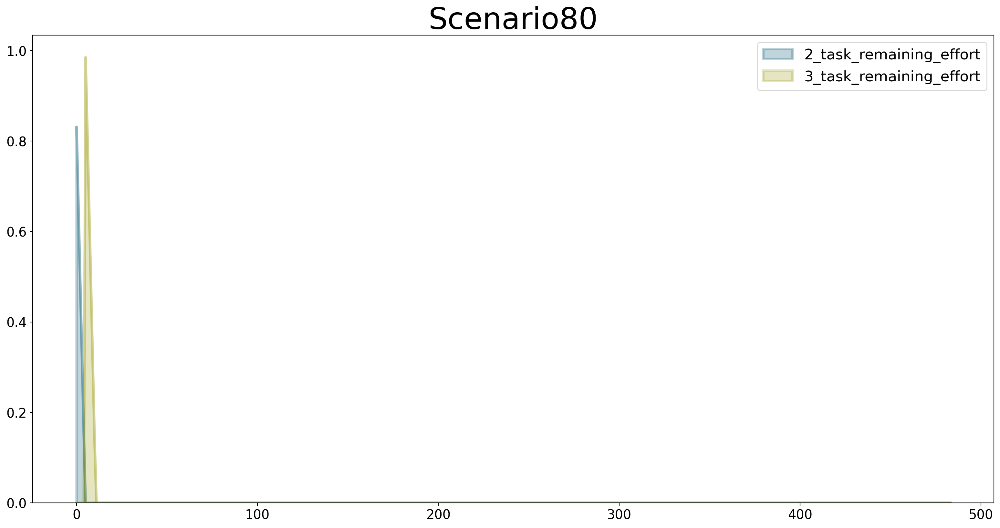

# Start BPTK and automatically read the scenarios found in the scenarios folder
# this also loads all the Python classes referenced in the scenarios, so we are immediately ready
# to run scenarios and plot results.
from BPTK_Py.bptk import bptk
bptk = bptk()Choose Data Collector
In-depth explanation of agent-based modeling
Data Collector for each agent
For agent-based models BPTK-Py has a standard data collector which collects the statistics (average, minumum, etc.) for all properties of all agent types. Collecting statistics for each agent individually will lead to a huge amount of data. However, if you want to explore this case or other cases which the standard data collector does not cover, you can also implement your own data collector. In this notebook, we explain how to proceed. Therefore we implement a new data collector class which collects the properties of each agent individually.
We first create a new class and choose a name for it: AgentDataCollector. Then we implement the necessary methods and constructors. However, we don’t want to create a whole new class but use the already existing methods of the standard data collector and extend it for our purposes. This saves a lot of work. The new data collector requires the following methods:
- A method which collects the data of each agent
- A method which represents the collected data in a dataframe (this is necessary for the plot method)
- A method which plots the data because the standard visualization class of BPTK-Py cannot handle the new data collector
The data collector AgentDataCollector is already in the BPTK-Py framework but yet we will explain how to implement your own data collector.
1. Create data collector class
Create a class and name it AgentDataCollector.
2. Import libraries
As explained before, we want to derive the new data collector class from the standard class. Therefore we have to import the standard data collector.
from BPTK_Py.abm import DataCollectorFor plotting the data, we also require pandas and a BPTK-Py config library. The config library is necessary to obtain the same plot design as the standard plot from BPTK-Py.
import pandas as pd
import BPTK_Py.config as configOf course, you can add as many libraries as you want. In depends on what you need for your collector.
3. Derive standard class
This how you derive the standard data collector:
class AgentDataCollector(DataCollector)4. Implement methods
As I explained before, we can either extend the class or replace methods. Since we want to overwrite the collecting method we have to replace def collect_agent_statistic(self, time, agents). Now you can implement the logic of your own data collector. To save the statistics, you can use the attribute self.agent_statistics which is an empty dictionary.
After collecting all the data we have to bring them into an usable structure to be able to plot the statistics later. I chose to transform the dictionary into multiple dataframes. For each agent there exists one dataframe with its statistics. When we have the statistics in a dataframe we can exploit the functionalities of the library pandas.
The data is prepared and we can now plot them by using the visualization methods of pandas. To obtain the same design as the plot of BPTK-Py you need change the following parameters of the plot method. For the parameter title you can set any title name. For more information about the configuration you can go to the BPTK-Py documentation: Developing Advanced User Interfaces
df.plot(kind=config.configuration["kind"],
alpha=config.configuration["alpha"],
stacked=config.configuration["stacked"],
figsize=config.configuration["figsize"],
title=title,
color=config.configuration["colors"],
lw=config.configuration["linewidth"])5. Set our new data collector in simulation model
The previous steps explained how to implement a data collector. Now, we have to set the new data collector in our model class. To show you each step, we use our model SPMAgentDataCollector.py which is in ./simulation_models/spm.
- You go to the simulation model and open the Python file.
- Import the new data collector:
from BPTK-Py.abm.datacollectors import AgentDataCollector. - Add
self.data_collector=AgentDataCollector()ininstantiate_model(self).
6. Run simulation model with new data collector
In this step, we run the simulation model with a specific scenario. All statistics of each agent are collected by the data collector.
model = bptk.scenario_manager_factory.get_scenario("ABMsmSimpleProjectManagementAgentDataCollector","scenario80").model
model.run()Now you can plot the stats of one or more specific agents. In our case we want to compare two tasks and see how much effort remains for them.
The following bullet points describe the parameters of the plot method: - agent_ids: choose the stats of the agents you want plot - properties: choose properties you want to plot - title: choose title of the plot - agent_type: choose the agent type
ax = model.data_collector.plot_agent_stats(agent_ids=[2,3],properties=['remaining_effort'],title="Scenario80",agent_type="task")
Output the stats in a dataframe
model.data_collector.get_agent_stats()['task'][2]| id | time | agent_state | agent_type | effort | remaining_effort | |
|---|---|---|---|---|---|---|
| 0 | 2 | 0.00 | in_progress | task | 1 | 0.831200 |
| 1 | 2 | 0.25 | in_progress | task | 1 | 0.662273 |
| 2 | 2 | 0.50 | in_progress | task | 1 | 0.493219 |
| 3 | 2 | 0.75 | in_progress | task | 1 | 0.324038 |
| 4 | 2 | 1.00 | in_progress | task | 1 | 0.154729 |
| ... | ... | ... | ... | ... | ... | ... |
| 479 | 2 | 119.75 | closed | task | 1 | 0.000000 |
| 480 | 2 | 120.00 | closed | task | 1 | 0.000000 |
| 481 | 2 | 120.25 | closed | task | 1 | 0.000000 |
| 482 | 2 | 120.50 | closed | task | 1 | 0.000000 |
| 483 | 2 | 120.75 | closed | task | 1 | 0.000000 |
484 rows × 6 columns
model.data_collector.get_agent_stats()['task'][3]| id | time | agent_state | agent_type | effort | remaining_effort | |
|---|---|---|---|---|---|---|
| 0 | 3 | 0.00 | open | task | 1 | 0.0 |
| 1 | 3 | 0.25 | open | task | 1 | 0.0 |
| 2 | 3 | 0.50 | open | task | 1 | 0.0 |
| 3 | 3 | 0.75 | open | task | 1 | 0.0 |
| 4 | 3 | 1.00 | open | task | 1 | 0.0 |
| ... | ... | ... | ... | ... | ... | ... |
| 479 | 3 | 119.75 | closed | task | 1 | 0.0 |
| 480 | 3 | 120.00 | closed | task | 1 | 0.0 |
| 481 | 3 | 120.25 | closed | task | 1 | 0.0 |
| 482 | 3 | 120.50 | closed | task | 1 | 0.0 |
| 483 | 3 | 120.75 | closed | task | 1 | 0.0 |
484 rows × 6 columns
If you want to get all stats of each agent you call model.data_collector.get_agent_stats()
model.data_collector.get_agent_stats(){'staf_member': {0: id time agent_state agent_type
0 0 0.00 busy staf_member
1 0 0.25 busy staf_member
2 0 0.50 busy staf_member
3 0 0.75 busy staf_member
4 0 1.00 busy staf_member
.. .. ... ... ...
479 0 119.75 available staf_member
480 0 120.00 available staf_member
481 0 120.25 available staf_member
482 0 120.50 available staf_member
483 0 120.75 available staf_member
[484 rows x 4 columns]},
'controlling': {1: id time agent_state agent_type productivity schedule_pressure
0 1 0.00 active controlling 0.675200 0.800000
1 1 0.25 active controlling 0.675708 0.800313
2 1 0.50 active controlling 0.676216 0.800626
3 1 0.75 active controlling 0.676725 0.800939
4 1 1.00 active controlling 0.677235 0.801253
.. .. ... ... ... ... ...
479 1 119.75 active controlling 1.000000 1.000000
480 1 120.00 active controlling 1.000000 1.000000
481 1 120.25 active controlling 1.000000 1.000000
482 1 120.50 active controlling 1.000000 1.000000
483 1 120.75 active controlling 1.000000 1.000000
[484 rows x 6 columns]},
'task': {2: id time agent_state agent_type effort remaining_effort
0 2 0.00 in_progress task 1 0.831200
1 2 0.25 in_progress task 1 0.662273
2 2 0.50 in_progress task 1 0.493219
3 2 0.75 in_progress task 1 0.324038
4 2 1.00 in_progress task 1 0.154729
.. .. ... ... ... ... ...
479 2 119.75 closed task 1 0.000000
480 2 120.00 closed task 1 0.000000
481 2 120.25 closed task 1 0.000000
482 2 120.50 closed task 1 0.000000
483 2 120.75 closed task 1 0.000000
[484 rows x 6 columns],
3: id time agent_state agent_type effort remaining_effort
0 3 0.00 open task 1 0.0
1 3 0.25 open task 1 0.0
2 3 0.50 open task 1 0.0
3 3 0.75 open task 1 0.0
4 3 1.00 open task 1 0.0
.. .. ... ... ... ... ...
479 3 119.75 closed task 1 0.0
480 3 120.00 closed task 1 0.0
481 3 120.25 closed task 1 0.0
482 3 120.50 closed task 1 0.0
483 3 120.75 closed task 1 0.0
[484 rows x 6 columns],
4: id time agent_state agent_type effort remaining_effort
0 4 0.00 open task 1 0.0
1 4 0.25 open task 1 0.0
2 4 0.50 open task 1 0.0
3 4 0.75 open task 1 0.0
4 4 1.00 open task 1 0.0
.. .. ... ... ... ... ...
479 4 119.75 closed task 1 0.0
480 4 120.00 closed task 1 0.0
481 4 120.25 closed task 1 0.0
482 4 120.50 closed task 1 0.0
483 4 120.75 closed task 1 0.0
[484 rows x 6 columns],
5: id time agent_state agent_type effort remaining_effort
0 5 0.00 open task 1 0.0
1 5 0.25 open task 1 0.0
2 5 0.50 open task 1 0.0
3 5 0.75 open task 1 0.0
4 5 1.00 open task 1 0.0
.. .. ... ... ... ... ...
479 5 119.75 closed task 1 0.0
480 5 120.00 closed task 1 0.0
481 5 120.25 closed task 1 0.0
482 5 120.50 closed task 1 0.0
483 5 120.75 closed task 1 0.0
[484 rows x 6 columns],
6: id time agent_state agent_type effort remaining_effort
0 6 0.00 open task 1 0.0
1 6 0.25 open task 1 0.0
2 6 0.50 open task 1 0.0
3 6 0.75 open task 1 0.0
4 6 1.00 open task 1 0.0
.. .. ... ... ... ... ...
479 6 119.75 closed task 1 0.0
480 6 120.00 closed task 1 0.0
481 6 120.25 closed task 1 0.0
482 6 120.50 closed task 1 0.0
483 6 120.75 closed task 1 0.0
[484 rows x 6 columns],
7: id time agent_state agent_type effort remaining_effort
0 7 0.00 open task 1 0.0
1 7 0.25 open task 1 0.0
2 7 0.50 open task 1 0.0
3 7 0.75 open task 1 0.0
4 7 1.00 open task 1 0.0
.. .. ... ... ... ... ...
479 7 119.75 closed task 1 0.0
480 7 120.00 closed task 1 0.0
481 7 120.25 closed task 1 0.0
482 7 120.50 closed task 1 0.0
483 7 120.75 closed task 1 0.0
[484 rows x 6 columns],
8: id time agent_state agent_type effort remaining_effort
0 8 0.00 open task 1 0.0
1 8 0.25 open task 1 0.0
2 8 0.50 open task 1 0.0
3 8 0.75 open task 1 0.0
4 8 1.00 open task 1 0.0
.. .. ... ... ... ... ...
479 8 119.75 closed task 1 0.0
480 8 120.00 closed task 1 0.0
481 8 120.25 closed task 1 0.0
482 8 120.50 closed task 1 0.0
483 8 120.75 closed task 1 0.0
[484 rows x 6 columns],
9: id time agent_state agent_type effort remaining_effort
0 9 0.00 open task 1 0.0
1 9 0.25 open task 1 0.0
2 9 0.50 open task 1 0.0
3 9 0.75 open task 1 0.0
4 9 1.00 open task 1 0.0
.. .. ... ... ... ... ...
479 9 119.75 closed task 1 0.0
480 9 120.00 closed task 1 0.0
481 9 120.25 closed task 1 0.0
482 9 120.50 closed task 1 0.0
483 9 120.75 closed task 1 0.0
[484 rows x 6 columns],
10: id time agent_state agent_type effort remaining_effort
0 10 0.00 open task 1 0.0
1 10 0.25 open task 1 0.0
2 10 0.50 open task 1 0.0
3 10 0.75 open task 1 0.0
4 10 1.00 open task 1 0.0
.. .. ... ... ... ... ...
479 10 119.75 closed task 1 0.0
480 10 120.00 closed task 1 0.0
481 10 120.25 closed task 1 0.0
482 10 120.50 closed task 1 0.0
483 10 120.75 closed task 1 0.0
[484 rows x 6 columns],
11: id time agent_state agent_type effort remaining_effort
0 11 0.00 open task 1 0.0
1 11 0.25 open task 1 0.0
2 11 0.50 open task 1 0.0
3 11 0.75 open task 1 0.0
4 11 1.00 open task 1 0.0
.. .. ... ... ... ... ...
479 11 119.75 closed task 1 0.0
480 11 120.00 closed task 1 0.0
481 11 120.25 closed task 1 0.0
482 11 120.50 closed task 1 0.0
483 11 120.75 closed task 1 0.0
[484 rows x 6 columns],
12: id time agent_state agent_type effort remaining_effort
0 12 0.00 open task 1 0.0
1 12 0.25 open task 1 0.0
2 12 0.50 open task 1 0.0
3 12 0.75 open task 1 0.0
4 12 1.00 open task 1 0.0
.. .. ... ... ... ... ...
479 12 119.75 closed task 1 0.0
480 12 120.00 closed task 1 0.0
481 12 120.25 closed task 1 0.0
482 12 120.50 closed task 1 0.0
483 12 120.75 closed task 1 0.0
[484 rows x 6 columns],
13: id time agent_state agent_type effort remaining_effort
0 13 0.00 open task 1 0.0
1 13 0.25 open task 1 0.0
2 13 0.50 open task 1 0.0
3 13 0.75 open task 1 0.0
4 13 1.00 open task 1 0.0
.. .. ... ... ... ... ...
479 13 119.75 closed task 1 0.0
480 13 120.00 closed task 1 0.0
481 13 120.25 closed task 1 0.0
482 13 120.50 closed task 1 0.0
483 13 120.75 closed task 1 0.0
[484 rows x 6 columns],
14: id time agent_state agent_type effort remaining_effort
0 14 0.00 open task 1 0.0
1 14 0.25 open task 1 0.0
2 14 0.50 open task 1 0.0
3 14 0.75 open task 1 0.0
4 14 1.00 open task 1 0.0
.. .. ... ... ... ... ...
479 14 119.75 closed task 1 0.0
480 14 120.00 closed task 1 0.0
481 14 120.25 closed task 1 0.0
482 14 120.50 closed task 1 0.0
483 14 120.75 closed task 1 0.0
[484 rows x 6 columns],
15: id time agent_state agent_type effort remaining_effort
0 15 0.00 open task 1 0.0
1 15 0.25 open task 1 0.0
2 15 0.50 open task 1 0.0
3 15 0.75 open task 1 0.0
4 15 1.00 open task 1 0.0
.. .. ... ... ... ... ...
479 15 119.75 closed task 1 0.0
480 15 120.00 closed task 1 0.0
481 15 120.25 closed task 1 0.0
482 15 120.50 closed task 1 0.0
483 15 120.75 closed task 1 0.0
[484 rows x 6 columns],
16: id time agent_state agent_type effort remaining_effort
0 16 0.00 open task 1 0.0
1 16 0.25 open task 1 0.0
2 16 0.50 open task 1 0.0
3 16 0.75 open task 1 0.0
4 16 1.00 open task 1 0.0
.. .. ... ... ... ... ...
479 16 119.75 closed task 1 0.0
480 16 120.00 closed task 1 0.0
481 16 120.25 closed task 1 0.0
482 16 120.50 closed task 1 0.0
483 16 120.75 closed task 1 0.0
[484 rows x 6 columns],
17: id time agent_state agent_type effort remaining_effort
0 17 0.00 open task 1 0.0
1 17 0.25 open task 1 0.0
2 17 0.50 open task 1 0.0
3 17 0.75 open task 1 0.0
4 17 1.00 open task 1 0.0
.. .. ... ... ... ... ...
479 17 119.75 closed task 1 0.0
480 17 120.00 closed task 1 0.0
481 17 120.25 closed task 1 0.0
482 17 120.50 closed task 1 0.0
483 17 120.75 closed task 1 0.0
[484 rows x 6 columns],
18: id time agent_state agent_type effort remaining_effort
0 18 0.00 open task 1 0.0
1 18 0.25 open task 1 0.0
2 18 0.50 open task 1 0.0
3 18 0.75 open task 1 0.0
4 18 1.00 open task 1 0.0
.. .. ... ... ... ... ...
479 18 119.75 closed task 1 0.0
480 18 120.00 closed task 1 0.0
481 18 120.25 closed task 1 0.0
482 18 120.50 closed task 1 0.0
483 18 120.75 closed task 1 0.0
[484 rows x 6 columns],
19: id time agent_state agent_type effort remaining_effort
0 19 0.00 open task 1 0.0
1 19 0.25 open task 1 0.0
2 19 0.50 open task 1 0.0
3 19 0.75 open task 1 0.0
4 19 1.00 open task 1 0.0
.. .. ... ... ... ... ...
479 19 119.75 closed task 1 0.0
480 19 120.00 closed task 1 0.0
481 19 120.25 closed task 1 0.0
482 19 120.50 closed task 1 0.0
483 19 120.75 closed task 1 0.0
[484 rows x 6 columns],
20: id time agent_state agent_type effort remaining_effort
0 20 0.00 open task 1 0.0
1 20 0.25 open task 1 0.0
2 20 0.50 open task 1 0.0
3 20 0.75 open task 1 0.0
4 20 1.00 open task 1 0.0
.. .. ... ... ... ... ...
479 20 119.75 closed task 1 0.0
480 20 120.00 closed task 1 0.0
481 20 120.25 closed task 1 0.0
482 20 120.50 closed task 1 0.0
483 20 120.75 closed task 1 0.0
[484 rows x 6 columns],
21: id time agent_state agent_type effort remaining_effort
0 21 0.00 open task 1 0.0
1 21 0.25 open task 1 0.0
2 21 0.50 open task 1 0.0
3 21 0.75 open task 1 0.0
4 21 1.00 open task 1 0.0
.. .. ... ... ... ... ...
479 21 119.75 closed task 1 0.0
480 21 120.00 closed task 1 0.0
481 21 120.25 closed task 1 0.0
482 21 120.50 closed task 1 0.0
483 21 120.75 closed task 1 0.0
[484 rows x 6 columns],
22: id time agent_state agent_type effort remaining_effort
0 22 0.00 open task 1 0.0
1 22 0.25 open task 1 0.0
2 22 0.50 open task 1 0.0
3 22 0.75 open task 1 0.0
4 22 1.00 open task 1 0.0
.. .. ... ... ... ... ...
479 22 119.75 closed task 1 0.0
480 22 120.00 closed task 1 0.0
481 22 120.25 closed task 1 0.0
482 22 120.50 closed task 1 0.0
483 22 120.75 closed task 1 0.0
[484 rows x 6 columns],
23: id time agent_state agent_type effort remaining_effort
0 23 0.00 open task 1 0.0
1 23 0.25 open task 1 0.0
2 23 0.50 open task 1 0.0
3 23 0.75 open task 1 0.0
4 23 1.00 open task 1 0.0
.. .. ... ... ... ... ...
479 23 119.75 closed task 1 0.0
480 23 120.00 closed task 1 0.0
481 23 120.25 closed task 1 0.0
482 23 120.50 closed task 1 0.0
483 23 120.75 closed task 1 0.0
[484 rows x 6 columns],
24: id time agent_state agent_type effort remaining_effort
0 24 0.00 open task 1 0.0
1 24 0.25 open task 1 0.0
2 24 0.50 open task 1 0.0
3 24 0.75 open task 1 0.0
4 24 1.00 open task 1 0.0
.. .. ... ... ... ... ...
479 24 119.75 closed task 1 0.0
480 24 120.00 closed task 1 0.0
481 24 120.25 closed task 1 0.0
482 24 120.50 closed task 1 0.0
483 24 120.75 closed task 1 0.0
[484 rows x 6 columns],
25: id time agent_state agent_type effort remaining_effort
0 25 0.00 open task 1 0.0
1 25 0.25 open task 1 0.0
2 25 0.50 open task 1 0.0
3 25 0.75 open task 1 0.0
4 25 1.00 open task 1 0.0
.. .. ... ... ... ... ...
479 25 119.75 closed task 1 0.0
480 25 120.00 closed task 1 0.0
481 25 120.25 closed task 1 0.0
482 25 120.50 closed task 1 0.0
483 25 120.75 closed task 1 0.0
[484 rows x 6 columns],
26: id time agent_state agent_type effort remaining_effort
0 26 0.00 open task 1 0.0
1 26 0.25 open task 1 0.0
2 26 0.50 open task 1 0.0
3 26 0.75 open task 1 0.0
4 26 1.00 open task 1 0.0
.. .. ... ... ... ... ...
479 26 119.75 closed task 1 0.0
480 26 120.00 closed task 1 0.0
481 26 120.25 closed task 1 0.0
482 26 120.50 closed task 1 0.0
483 26 120.75 closed task 1 0.0
[484 rows x 6 columns],
27: id time agent_state agent_type effort remaining_effort
0 27 0.00 open task 1 0.0
1 27 0.25 open task 1 0.0
2 27 0.50 open task 1 0.0
3 27 0.75 open task 1 0.0
4 27 1.00 open task 1 0.0
.. .. ... ... ... ... ...
479 27 119.75 closed task 1 0.0
480 27 120.00 closed task 1 0.0
481 27 120.25 closed task 1 0.0
482 27 120.50 closed task 1 0.0
483 27 120.75 closed task 1 0.0
[484 rows x 6 columns],
28: id time agent_state agent_type effort remaining_effort
0 28 0.00 open task 1 0.0
1 28 0.25 open task 1 0.0
2 28 0.50 open task 1 0.0
3 28 0.75 open task 1 0.0
4 28 1.00 open task 1 0.0
.. .. ... ... ... ... ...
479 28 119.75 closed task 1 0.0
480 28 120.00 closed task 1 0.0
481 28 120.25 closed task 1 0.0
482 28 120.50 closed task 1 0.0
483 28 120.75 closed task 1 0.0
[484 rows x 6 columns],
29: id time agent_state agent_type effort remaining_effort
0 29 0.00 open task 1 0.0
1 29 0.25 open task 1 0.0
2 29 0.50 open task 1 0.0
3 29 0.75 open task 1 0.0
4 29 1.00 open task 1 0.0
.. .. ... ... ... ... ...
479 29 119.75 closed task 1 0.0
480 29 120.00 closed task 1 0.0
481 29 120.25 closed task 1 0.0
482 29 120.50 closed task 1 0.0
483 29 120.75 closed task 1 0.0
[484 rows x 6 columns],
30: id time agent_state agent_type effort remaining_effort
0 30 0.00 open task 1 0.0
1 30 0.25 open task 1 0.0
2 30 0.50 open task 1 0.0
3 30 0.75 open task 1 0.0
4 30 1.00 open task 1 0.0
.. .. ... ... ... ... ...
479 30 119.75 closed task 1 0.0
480 30 120.00 closed task 1 0.0
481 30 120.25 closed task 1 0.0
482 30 120.50 closed task 1 0.0
483 30 120.75 closed task 1 0.0
[484 rows x 6 columns],
31: id time agent_state agent_type effort remaining_effort
0 31 0.00 open task 1 0.0
1 31 0.25 open task 1 0.0
2 31 0.50 open task 1 0.0
3 31 0.75 open task 1 0.0
4 31 1.00 open task 1 0.0
.. .. ... ... ... ... ...
479 31 119.75 closed task 1 0.0
480 31 120.00 closed task 1 0.0
481 31 120.25 closed task 1 0.0
482 31 120.50 closed task 1 0.0
483 31 120.75 closed task 1 0.0
[484 rows x 6 columns],
32: id time agent_state agent_type effort remaining_effort
0 32 0.00 open task 1 0.0
1 32 0.25 open task 1 0.0
2 32 0.50 open task 1 0.0
3 32 0.75 open task 1 0.0
4 32 1.00 open task 1 0.0
.. .. ... ... ... ... ...
479 32 119.75 closed task 1 0.0
480 32 120.00 closed task 1 0.0
481 32 120.25 closed task 1 0.0
482 32 120.50 closed task 1 0.0
483 32 120.75 closed task 1 0.0
[484 rows x 6 columns],
33: id time agent_state agent_type effort remaining_effort
0 33 0.00 open task 1 0.0
1 33 0.25 open task 1 0.0
2 33 0.50 open task 1 0.0
3 33 0.75 open task 1 0.0
4 33 1.00 open task 1 0.0
.. .. ... ... ... ... ...
479 33 119.75 closed task 1 0.0
480 33 120.00 closed task 1 0.0
481 33 120.25 closed task 1 0.0
482 33 120.50 closed task 1 0.0
483 33 120.75 closed task 1 0.0
[484 rows x 6 columns],
34: id time agent_state agent_type effort remaining_effort
0 34 0.00 open task 1 0.0
1 34 0.25 open task 1 0.0
2 34 0.50 open task 1 0.0
3 34 0.75 open task 1 0.0
4 34 1.00 open task 1 0.0
.. .. ... ... ... ... ...
479 34 119.75 closed task 1 0.0
480 34 120.00 closed task 1 0.0
481 34 120.25 closed task 1 0.0
482 34 120.50 closed task 1 0.0
483 34 120.75 closed task 1 0.0
[484 rows x 6 columns],
35: id time agent_state agent_type effort remaining_effort
0 35 0.00 open task 1 0.0
1 35 0.25 open task 1 0.0
2 35 0.50 open task 1 0.0
3 35 0.75 open task 1 0.0
4 35 1.00 open task 1 0.0
.. .. ... ... ... ... ...
479 35 119.75 closed task 1 0.0
480 35 120.00 closed task 1 0.0
481 35 120.25 closed task 1 0.0
482 35 120.50 closed task 1 0.0
483 35 120.75 closed task 1 0.0
[484 rows x 6 columns],
36: id time agent_state agent_type effort remaining_effort
0 36 0.00 open task 1 0.0
1 36 0.25 open task 1 0.0
2 36 0.50 open task 1 0.0
3 36 0.75 open task 1 0.0
4 36 1.00 open task 1 0.0
.. .. ... ... ... ... ...
479 36 119.75 closed task 1 0.0
480 36 120.00 closed task 1 0.0
481 36 120.25 closed task 1 0.0
482 36 120.50 closed task 1 0.0
483 36 120.75 closed task 1 0.0
[484 rows x 6 columns],
37: id time agent_state agent_type effort remaining_effort
0 37 0.00 open task 1 0.0
1 37 0.25 open task 1 0.0
2 37 0.50 open task 1 0.0
3 37 0.75 open task 1 0.0
4 37 1.00 open task 1 0.0
.. .. ... ... ... ... ...
479 37 119.75 closed task 1 0.0
480 37 120.00 closed task 1 0.0
481 37 120.25 closed task 1 0.0
482 37 120.50 closed task 1 0.0
483 37 120.75 closed task 1 0.0
[484 rows x 6 columns],
38: id time agent_state agent_type effort remaining_effort
0 38 0.00 open task 1 0.0
1 38 0.25 open task 1 0.0
2 38 0.50 open task 1 0.0
3 38 0.75 open task 1 0.0
4 38 1.00 open task 1 0.0
.. .. ... ... ... ... ...
479 38 119.75 closed task 1 0.0
480 38 120.00 closed task 1 0.0
481 38 120.25 closed task 1 0.0
482 38 120.50 closed task 1 0.0
483 38 120.75 closed task 1 0.0
[484 rows x 6 columns],
39: id time agent_state agent_type effort remaining_effort
0 39 0.00 open task 1 0.0
1 39 0.25 open task 1 0.0
2 39 0.50 open task 1 0.0
3 39 0.75 open task 1 0.0
4 39 1.00 open task 1 0.0
.. .. ... ... ... ... ...
479 39 119.75 closed task 1 0.0
480 39 120.00 closed task 1 0.0
481 39 120.25 closed task 1 0.0
482 39 120.50 closed task 1 0.0
483 39 120.75 closed task 1 0.0
[484 rows x 6 columns],
40: id time agent_state agent_type effort remaining_effort
0 40 0.00 open task 1 0.0
1 40 0.25 open task 1 0.0
2 40 0.50 open task 1 0.0
3 40 0.75 open task 1 0.0
4 40 1.00 open task 1 0.0
.. .. ... ... ... ... ...
479 40 119.75 closed task 1 0.0
480 40 120.00 closed task 1 0.0
481 40 120.25 closed task 1 0.0
482 40 120.50 closed task 1 0.0
483 40 120.75 closed task 1 0.0
[484 rows x 6 columns],
41: id time agent_state agent_type effort remaining_effort
0 41 0.00 open task 1 0.0
1 41 0.25 open task 1 0.0
2 41 0.50 open task 1 0.0
3 41 0.75 open task 1 0.0
4 41 1.00 open task 1 0.0
.. .. ... ... ... ... ...
479 41 119.75 closed task 1 0.0
480 41 120.00 closed task 1 0.0
481 41 120.25 closed task 1 0.0
482 41 120.50 closed task 1 0.0
483 41 120.75 closed task 1 0.0
[484 rows x 6 columns],
42: id time agent_state agent_type effort remaining_effort
0 42 0.00 open task 1 0.0
1 42 0.25 open task 1 0.0
2 42 0.50 open task 1 0.0
3 42 0.75 open task 1 0.0
4 42 1.00 open task 1 0.0
.. .. ... ... ... ... ...
479 42 119.75 closed task 1 0.0
480 42 120.00 closed task 1 0.0
481 42 120.25 closed task 1 0.0
482 42 120.50 closed task 1 0.0
483 42 120.75 closed task 1 0.0
[484 rows x 6 columns],
43: id time agent_state agent_type effort remaining_effort
0 43 0.00 open task 1 0.0
1 43 0.25 open task 1 0.0
2 43 0.50 open task 1 0.0
3 43 0.75 open task 1 0.0
4 43 1.00 open task 1 0.0
.. .. ... ... ... ... ...
479 43 119.75 closed task 1 0.0
480 43 120.00 closed task 1 0.0
481 43 120.25 closed task 1 0.0
482 43 120.50 closed task 1 0.0
483 43 120.75 closed task 1 0.0
[484 rows x 6 columns],
44: id time agent_state agent_type effort remaining_effort
0 44 0.00 open task 1 0.0
1 44 0.25 open task 1 0.0
2 44 0.50 open task 1 0.0
3 44 0.75 open task 1 0.0
4 44 1.00 open task 1 0.0
.. .. ... ... ... ... ...
479 44 119.75 closed task 1 0.0
480 44 120.00 closed task 1 0.0
481 44 120.25 closed task 1 0.0
482 44 120.50 closed task 1 0.0
483 44 120.75 closed task 1 0.0
[484 rows x 6 columns],
45: id time agent_state agent_type effort remaining_effort
0 45 0.00 open task 1 0.0
1 45 0.25 open task 1 0.0
2 45 0.50 open task 1 0.0
3 45 0.75 open task 1 0.0
4 45 1.00 open task 1 0.0
.. .. ... ... ... ... ...
479 45 119.75 closed task 1 0.0
480 45 120.00 closed task 1 0.0
481 45 120.25 closed task 1 0.0
482 45 120.50 closed task 1 0.0
483 45 120.75 closed task 1 0.0
[484 rows x 6 columns],
46: id time agent_state agent_type effort remaining_effort
0 46 0.00 open task 1 0.0
1 46 0.25 open task 1 0.0
2 46 0.50 open task 1 0.0
3 46 0.75 open task 1 0.0
4 46 1.00 open task 1 0.0
.. .. ... ... ... ... ...
479 46 119.75 closed task 1 0.0
480 46 120.00 closed task 1 0.0
481 46 120.25 closed task 1 0.0
482 46 120.50 closed task 1 0.0
483 46 120.75 closed task 1 0.0
[484 rows x 6 columns],
47: id time agent_state agent_type effort remaining_effort
0 47 0.00 open task 1 0.0
1 47 0.25 open task 1 0.0
2 47 0.50 open task 1 0.0
3 47 0.75 open task 1 0.0
4 47 1.00 open task 1 0.0
.. .. ... ... ... ... ...
479 47 119.75 closed task 1 0.0
480 47 120.00 closed task 1 0.0
481 47 120.25 closed task 1 0.0
482 47 120.50 closed task 1 0.0
483 47 120.75 closed task 1 0.0
[484 rows x 6 columns],
48: id time agent_state agent_type effort remaining_effort
0 48 0.00 open task 1 0.0
1 48 0.25 open task 1 0.0
2 48 0.50 open task 1 0.0
3 48 0.75 open task 1 0.0
4 48 1.00 open task 1 0.0
.. .. ... ... ... ... ...
479 48 119.75 closed task 1 0.0
480 48 120.00 closed task 1 0.0
481 48 120.25 closed task 1 0.0
482 48 120.50 closed task 1 0.0
483 48 120.75 closed task 1 0.0
[484 rows x 6 columns],
49: id time agent_state agent_type effort remaining_effort
0 49 0.00 open task 1 0.0
1 49 0.25 open task 1 0.0
2 49 0.50 open task 1 0.0
3 49 0.75 open task 1 0.0
4 49 1.00 open task 1 0.0
.. .. ... ... ... ... ...
479 49 119.75 closed task 1 0.0
480 49 120.00 closed task 1 0.0
481 49 120.25 closed task 1 0.0
482 49 120.50 closed task 1 0.0
483 49 120.75 closed task 1 0.0
[484 rows x 6 columns],
50: id time agent_state agent_type effort remaining_effort
0 50 0.00 open task 1 0.0
1 50 0.25 open task 1 0.0
2 50 0.50 open task 1 0.0
3 50 0.75 open task 1 0.0
4 50 1.00 open task 1 0.0
.. .. ... ... ... ... ...
479 50 119.75 closed task 1 0.0
480 50 120.00 closed task 1 0.0
481 50 120.25 closed task 1 0.0
482 50 120.50 closed task 1 0.0
483 50 120.75 closed task 1 0.0
[484 rows x 6 columns],
51: id time agent_state agent_type effort remaining_effort
0 51 0.00 open task 1 0.0
1 51 0.25 open task 1 0.0
2 51 0.50 open task 1 0.0
3 51 0.75 open task 1 0.0
4 51 1.00 open task 1 0.0
.. .. ... ... ... ... ...
479 51 119.75 closed task 1 0.0
480 51 120.00 closed task 1 0.0
481 51 120.25 closed task 1 0.0
482 51 120.50 closed task 1 0.0
483 51 120.75 closed task 1 0.0
[484 rows x 6 columns],
52: id time agent_state agent_type effort remaining_effort
0 52 0.00 open task 1 0.0
1 52 0.25 open task 1 0.0
2 52 0.50 open task 1 0.0
3 52 0.75 open task 1 0.0
4 52 1.00 open task 1 0.0
.. .. ... ... ... ... ...
479 52 119.75 closed task 1 0.0
480 52 120.00 closed task 1 0.0
481 52 120.25 closed task 1 0.0
482 52 120.50 closed task 1 0.0
483 52 120.75 closed task 1 0.0
[484 rows x 6 columns],
53: id time agent_state agent_type effort remaining_effort
0 53 0.00 open task 1 0.0
1 53 0.25 open task 1 0.0
2 53 0.50 open task 1 0.0
3 53 0.75 open task 1 0.0
4 53 1.00 open task 1 0.0
.. .. ... ... ... ... ...
479 53 119.75 closed task 1 0.0
480 53 120.00 closed task 1 0.0
481 53 120.25 closed task 1 0.0
482 53 120.50 closed task 1 0.0
483 53 120.75 closed task 1 0.0
[484 rows x 6 columns],
54: id time agent_state agent_type effort remaining_effort
0 54 0.00 open task 1 0.0
1 54 0.25 open task 1 0.0
2 54 0.50 open task 1 0.0
3 54 0.75 open task 1 0.0
4 54 1.00 open task 1 0.0
.. .. ... ... ... ... ...
479 54 119.75 closed task 1 0.0
480 54 120.00 closed task 1 0.0
481 54 120.25 closed task 1 0.0
482 54 120.50 closed task 1 0.0
483 54 120.75 closed task 1 0.0
[484 rows x 6 columns],
55: id time agent_state agent_type effort remaining_effort
0 55 0.00 open task 1 0.0
1 55 0.25 open task 1 0.0
2 55 0.50 open task 1 0.0
3 55 0.75 open task 1 0.0
4 55 1.00 open task 1 0.0
.. .. ... ... ... ... ...
479 55 119.75 closed task 1 0.0
480 55 120.00 closed task 1 0.0
481 55 120.25 closed task 1 0.0
482 55 120.50 closed task 1 0.0
483 55 120.75 closed task 1 0.0
[484 rows x 6 columns],
56: id time agent_state agent_type effort remaining_effort
0 56 0.00 open task 1 0.0
1 56 0.25 open task 1 0.0
2 56 0.50 open task 1 0.0
3 56 0.75 open task 1 0.0
4 56 1.00 open task 1 0.0
.. .. ... ... ... ... ...
479 56 119.75 closed task 1 0.0
480 56 120.00 closed task 1 0.0
481 56 120.25 closed task 1 0.0
482 56 120.50 closed task 1 0.0
483 56 120.75 closed task 1 0.0
[484 rows x 6 columns],
57: id time agent_state agent_type effort remaining_effort
0 57 0.00 open task 1 0.0
1 57 0.25 open task 1 0.0
2 57 0.50 open task 1 0.0
3 57 0.75 open task 1 0.0
4 57 1.00 open task 1 0.0
.. .. ... ... ... ... ...
479 57 119.75 closed task 1 0.0
480 57 120.00 closed task 1 0.0
481 57 120.25 closed task 1 0.0
482 57 120.50 closed task 1 0.0
483 57 120.75 closed task 1 0.0
[484 rows x 6 columns],
58: id time agent_state agent_type effort remaining_effort
0 58 0.00 open task 1 0.0
1 58 0.25 open task 1 0.0
2 58 0.50 open task 1 0.0
3 58 0.75 open task 1 0.0
4 58 1.00 open task 1 0.0
.. .. ... ... ... ... ...
479 58 119.75 closed task 1 0.0
480 58 120.00 closed task 1 0.0
481 58 120.25 closed task 1 0.0
482 58 120.50 closed task 1 0.0
483 58 120.75 closed task 1 0.0
[484 rows x 6 columns],
59: id time agent_state agent_type effort remaining_effort
0 59 0.00 open task 1 0.0
1 59 0.25 open task 1 0.0
2 59 0.50 open task 1 0.0
3 59 0.75 open task 1 0.0
4 59 1.00 open task 1 0.0
.. .. ... ... ... ... ...
479 59 119.75 closed task 1 0.0
480 59 120.00 closed task 1 0.0
481 59 120.25 closed task 1 0.0
482 59 120.50 closed task 1 0.0
483 59 120.75 closed task 1 0.0
[484 rows x 6 columns],
60: id time agent_state agent_type effort remaining_effort
0 60 0.00 open task 1 0.0
1 60 0.25 open task 1 0.0
2 60 0.50 open task 1 0.0
3 60 0.75 open task 1 0.0
4 60 1.00 open task 1 0.0
.. .. ... ... ... ... ...
479 60 119.75 closed task 1 0.0
480 60 120.00 closed task 1 0.0
481 60 120.25 closed task 1 0.0
482 60 120.50 closed task 1 0.0
483 60 120.75 closed task 1 0.0
[484 rows x 6 columns],
61: id time agent_state agent_type effort remaining_effort
0 61 0.00 open task 1 0.0
1 61 0.25 open task 1 0.0
2 61 0.50 open task 1 0.0
3 61 0.75 open task 1 0.0
4 61 1.00 open task 1 0.0
.. .. ... ... ... ... ...
479 61 119.75 closed task 1 0.0
480 61 120.00 closed task 1 0.0
481 61 120.25 closed task 1 0.0
482 61 120.50 closed task 1 0.0
483 61 120.75 closed task 1 0.0
[484 rows x 6 columns],
62: id time agent_state agent_type effort remaining_effort
0 62 0.00 open task 1 0.0
1 62 0.25 open task 1 0.0
2 62 0.50 open task 1 0.0
3 62 0.75 open task 1 0.0
4 62 1.00 open task 1 0.0
.. .. ... ... ... ... ...
479 62 119.75 closed task 1 0.0
480 62 120.00 closed task 1 0.0
481 62 120.25 closed task 1 0.0
482 62 120.50 closed task 1 0.0
483 62 120.75 closed task 1 0.0
[484 rows x 6 columns],
63: id time agent_state agent_type effort remaining_effort
0 63 0.00 open task 1 0.0
1 63 0.25 open task 1 0.0
2 63 0.50 open task 1 0.0
3 63 0.75 open task 1 0.0
4 63 1.00 open task 1 0.0
.. .. ... ... ... ... ...
479 63 119.75 closed task 1 0.0
480 63 120.00 closed task 1 0.0
481 63 120.25 closed task 1 0.0
482 63 120.50 closed task 1 0.0
483 63 120.75 closed task 1 0.0
[484 rows x 6 columns],
64: id time agent_state agent_type effort remaining_effort
0 64 0.00 open task 1 0.0
1 64 0.25 open task 1 0.0
2 64 0.50 open task 1 0.0
3 64 0.75 open task 1 0.0
4 64 1.00 open task 1 0.0
.. .. ... ... ... ... ...
479 64 119.75 closed task 1 0.0
480 64 120.00 closed task 1 0.0
481 64 120.25 closed task 1 0.0
482 64 120.50 closed task 1 0.0
483 64 120.75 closed task 1 0.0
[484 rows x 6 columns],
65: id time agent_state agent_type effort remaining_effort
0 65 0.00 open task 1 0.0
1 65 0.25 open task 1 0.0
2 65 0.50 open task 1 0.0
3 65 0.75 open task 1 0.0
4 65 1.00 open task 1 0.0
.. .. ... ... ... ... ...
479 65 119.75 closed task 1 0.0
480 65 120.00 closed task 1 0.0
481 65 120.25 closed task 1 0.0
482 65 120.50 closed task 1 0.0
483 65 120.75 closed task 1 0.0
[484 rows x 6 columns],
66: id time agent_state agent_type effort remaining_effort
0 66 0.00 open task 1 0.0
1 66 0.25 open task 1 0.0
2 66 0.50 open task 1 0.0
3 66 0.75 open task 1 0.0
4 66 1.00 open task 1 0.0
.. .. ... ... ... ... ...
479 66 119.75 closed task 1 0.0
480 66 120.00 closed task 1 0.0
481 66 120.25 closed task 1 0.0
482 66 120.50 closed task 1 0.0
483 66 120.75 closed task 1 0.0
[484 rows x 6 columns],
67: id time agent_state agent_type effort remaining_effort
0 67 0.00 open task 1 0.0
1 67 0.25 open task 1 0.0
2 67 0.50 open task 1 0.0
3 67 0.75 open task 1 0.0
4 67 1.00 open task 1 0.0
.. .. ... ... ... ... ...
479 67 119.75 closed task 1 0.0
480 67 120.00 closed task 1 0.0
481 67 120.25 closed task 1 0.0
482 67 120.50 closed task 1 0.0
483 67 120.75 closed task 1 0.0
[484 rows x 6 columns],
68: id time agent_state agent_type effort remaining_effort
0 68 0.00 open task 1 0.0
1 68 0.25 open task 1 0.0
2 68 0.50 open task 1 0.0
3 68 0.75 open task 1 0.0
4 68 1.00 open task 1 0.0
.. .. ... ... ... ... ...
479 68 119.75 closed task 1 0.0
480 68 120.00 closed task 1 0.0
481 68 120.25 closed task 1 0.0
482 68 120.50 closed task 1 0.0
483 68 120.75 closed task 1 0.0
[484 rows x 6 columns],
69: id time agent_state agent_type effort remaining_effort
0 69 0.00 open task 1 0.0
1 69 0.25 open task 1 0.0
2 69 0.50 open task 1 0.0
3 69 0.75 open task 1 0.0
4 69 1.00 open task 1 0.0
.. .. ... ... ... ... ...
479 69 119.75 closed task 1 0.0
480 69 120.00 closed task 1 0.0
481 69 120.25 closed task 1 0.0
482 69 120.50 closed task 1 0.0
483 69 120.75 closed task 1 0.0
[484 rows x 6 columns],
70: id time agent_state agent_type effort remaining_effort
0 70 0.00 open task 1 0.0
1 70 0.25 open task 1 0.0
2 70 0.50 open task 1 0.0
3 70 0.75 open task 1 0.0
4 70 1.00 open task 1 0.0
.. .. ... ... ... ... ...
479 70 119.75 closed task 1 0.0
480 70 120.00 closed task 1 0.0
481 70 120.25 closed task 1 0.0
482 70 120.50 closed task 1 0.0
483 70 120.75 closed task 1 0.0
[484 rows x 6 columns],
71: id time agent_state agent_type effort remaining_effort
0 71 0.00 open task 1 0.0
1 71 0.25 open task 1 0.0
2 71 0.50 open task 1 0.0
3 71 0.75 open task 1 0.0
4 71 1.00 open task 1 0.0
.. .. ... ... ... ... ...
479 71 119.75 closed task 1 0.0
480 71 120.00 closed task 1 0.0
481 71 120.25 closed task 1 0.0
482 71 120.50 closed task 1 0.0
483 71 120.75 closed task 1 0.0
[484 rows x 6 columns],
72: id time agent_state agent_type effort remaining_effort
0 72 0.00 open task 1 0.0
1 72 0.25 open task 1 0.0
2 72 0.50 open task 1 0.0
3 72 0.75 open task 1 0.0
4 72 1.00 open task 1 0.0
.. .. ... ... ... ... ...
479 72 119.75 closed task 1 0.0
480 72 120.00 closed task 1 0.0
481 72 120.25 closed task 1 0.0
482 72 120.50 closed task 1 0.0
483 72 120.75 closed task 1 0.0
[484 rows x 6 columns],
73: id time agent_state agent_type effort remaining_effort
0 73 0.00 open task 1 0.0
1 73 0.25 open task 1 0.0
2 73 0.50 open task 1 0.0
3 73 0.75 open task 1 0.0
4 73 1.00 open task 1 0.0
.. .. ... ... ... ... ...
479 73 119.75 closed task 1 0.0
480 73 120.00 closed task 1 0.0
481 73 120.25 closed task 1 0.0
482 73 120.50 closed task 1 0.0
483 73 120.75 closed task 1 0.0
[484 rows x 6 columns],
74: id time agent_state agent_type effort remaining_effort
0 74 0.00 open task 1 0.0
1 74 0.25 open task 1 0.0
2 74 0.50 open task 1 0.0
3 74 0.75 open task 1 0.0
4 74 1.00 open task 1 0.0
.. .. ... ... ... ... ...
479 74 119.75 closed task 1 0.0
480 74 120.00 closed task 1 0.0
481 74 120.25 closed task 1 0.0
482 74 120.50 closed task 1 0.0
483 74 120.75 closed task 1 0.0
[484 rows x 6 columns],
75: id time agent_state agent_type effort remaining_effort
0 75 0.00 open task 1 0.0
1 75 0.25 open task 1 0.0
2 75 0.50 open task 1 0.0
3 75 0.75 open task 1 0.0
4 75 1.00 open task 1 0.0
.. .. ... ... ... ... ...
479 75 119.75 closed task 1 0.0
480 75 120.00 closed task 1 0.0
481 75 120.25 closed task 1 0.0
482 75 120.50 closed task 1 0.0
483 75 120.75 closed task 1 0.0
[484 rows x 6 columns],
76: id time agent_state agent_type effort remaining_effort
0 76 0.00 open task 1 0.0
1 76 0.25 open task 1 0.0
2 76 0.50 open task 1 0.0
3 76 0.75 open task 1 0.0
4 76 1.00 open task 1 0.0
.. .. ... ... ... ... ...
479 76 119.75 closed task 1 0.0
480 76 120.00 closed task 1 0.0
481 76 120.25 closed task 1 0.0
482 76 120.50 closed task 1 0.0
483 76 120.75 closed task 1 0.0
[484 rows x 6 columns],
77: id time agent_state agent_type effort remaining_effort
0 77 0.00 open task 1 0.0
1 77 0.25 open task 1 0.0
2 77 0.50 open task 1 0.0
3 77 0.75 open task 1 0.0
4 77 1.00 open task 1 0.0
.. .. ... ... ... ... ...
479 77 119.75 closed task 1 0.0
480 77 120.00 closed task 1 0.0
481 77 120.25 closed task 1 0.0
482 77 120.50 closed task 1 0.0
483 77 120.75 closed task 1 0.0
[484 rows x 6 columns],
78: id time agent_state agent_type effort remaining_effort
0 78 0.00 open task 1 0.0
1 78 0.25 open task 1 0.0
2 78 0.50 open task 1 0.0
3 78 0.75 open task 1 0.0
4 78 1.00 open task 1 0.0
.. .. ... ... ... ... ...
479 78 119.75 closed task 1 0.0
480 78 120.00 closed task 1 0.0
481 78 120.25 closed task 1 0.0
482 78 120.50 closed task 1 0.0
483 78 120.75 closed task 1 0.0
[484 rows x 6 columns],
79: id time agent_state agent_type effort remaining_effort
0 79 0.00 open task 1 0.0
1 79 0.25 open task 1 0.0
2 79 0.50 open task 1 0.0
3 79 0.75 open task 1 0.0
4 79 1.00 open task 1 0.0
.. .. ... ... ... ... ...
479 79 119.75 closed task 1 0.0
480 79 120.00 closed task 1 0.0
481 79 120.25 closed task 1 0.0
482 79 120.50 closed task 1 0.0
483 79 120.75 closed task 1 0.0
[484 rows x 6 columns],
80: id time agent_state agent_type effort remaining_effort
0 80 0.00 open task 1 0.0
1 80 0.25 open task 1 0.0
2 80 0.50 open task 1 0.0
3 80 0.75 open task 1 0.0
4 80 1.00 open task 1 0.0
.. .. ... ... ... ... ...
479 80 119.75 closed task 1 0.0
480 80 120.00 closed task 1 0.0
481 80 120.25 closed task 1 0.0
482 80 120.50 closed task 1 0.0
483 80 120.75 closed task 1 0.0
[484 rows x 6 columns],
81: id time agent_state agent_type effort remaining_effort
0 81 0.00 open task 1 0.0
1 81 0.25 open task 1 0.0
2 81 0.50 open task 1 0.0
3 81 0.75 open task 1 0.0
4 81 1.00 open task 1 0.0
.. .. ... ... ... ... ...
479 81 119.75 closed task 1 0.0
480 81 120.00 closed task 1 0.0
481 81 120.25 closed task 1 0.0
482 81 120.50 closed task 1 0.0
483 81 120.75 closed task 1 0.0
[484 rows x 6 columns]}}